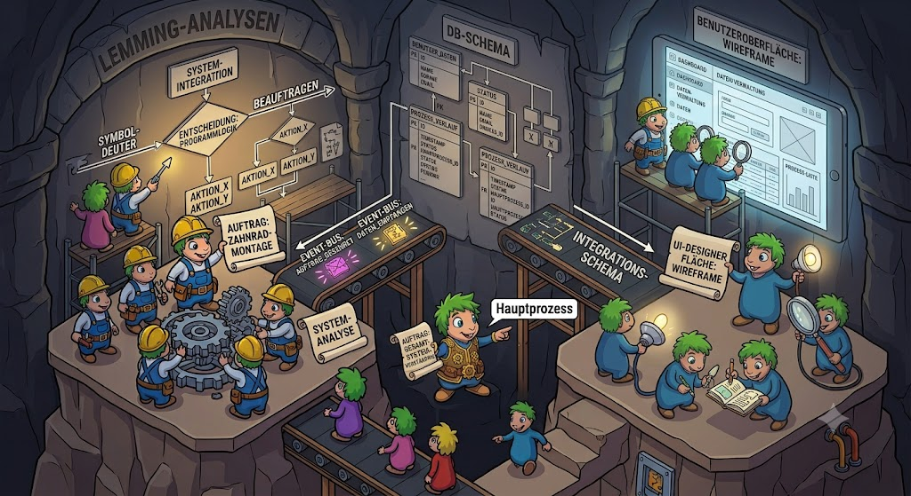

|
<< Click to Display Table of Contents >> Navigation: »No topics above this level« Programmiermodell |

Die Programmierwelt beginnt in PUM, dem Modellierungstool und den dort programmierten Codegeneratoren. PUM hat Klassen, Klassenhierarchien, Instanzattribute und Assoziationen (im Jahre 2003). Keine Enumerations, keine Konstanten ... es war eine einfache Welt.
Mit jeder neuen Plattform sind allgemeine und speziellen Festlegungen zu treffen. Einige Festlegungen spiegeln sich sofort in PUM wieder - andere werden nur in den Codegenerator berücksichtigt.
Dann gibt es eine fließende Grenze: was wird durch den Codegenerator erzeugt, was durch eine eventuell außerhalb zu erzeugende Runtime-Bibliothek abgearbeitet. Welche Informationen brauchen die Codegeneratoren bei speziellen Klassen (was das "speziell" auch immer heißen mag) ?
Um ein stabiles System zu bekommen, werden erst einmal die "Sachen" manuell programmiert - dann ein weitere "Sache" und man schaut, was jedesmal neu ist und was sich wiederholt. Letzteres kann in eine Runtime. Irgendwann funktioniert die Idee und sie stabilisiert sich und man beginnt den Codegenerator zu programmieren / anzupassen.
Die erste Platform war ein C#, INRAM-System entwickelt für das C# des Jahres 2002/2003. Wie bereits oben beschrieben: keine Enumerations (die wurden erst 2025 in den C#INRAM-Codegeneratoren berücksichtigt) und für ein C# des Jahres 2002/2003. Bei den Assoziationen gab es Beschränkungen auf Arrays.
Bei dieser ersten Platform gab es eine erst entscheidende Frage: Wie wird Quelltext erzeugt, wie abgelegt und die Entwickler von C# haben mit "Class Extensions" wirklich einen guten Riecher gehabt und machten C# zu einer tollen Sprache für Codegeneratoren. Das mag wohl auch nicht verwunderlich sein, denn bei der Erstellung der eigenen WinForm UIs nutzen sie diese gleichen Möglichkeiten. Wirklich gut durchdacht, Microsoft !
Also der Codegenerator erzeugt seinen Code für jede Klasse in einer eigenen Datei ("klassenname".auto.cs) - legt aber bereits eine Datei ("klassenname".cs) an, in der der Entwickler seinen Code schreiben kann.
Rund 10 Jahre später (2013/2014) kam eine weitere Plattform hinzu: Gemstone/S und API Programmierung. Hier gab es wesentliche neue Festlegungen zu treffen:
•API Request
•Implementierungen der Assoziationen
•Besonderheiten der Gemstone/S Datenbank
und natürlich die normale Frage:
•Transfer des Modell-Quelltextes nach Gemstone/S.
Einige dieser Punkte werden in den folgenden Unterkapitel genauer besprochen.
Mit den Erfahrungen aus der Implementation der Gemstone/S API Plattform, wurde das API Konzept 2024/2025 auch in das C#, INRAM - System übernommen.